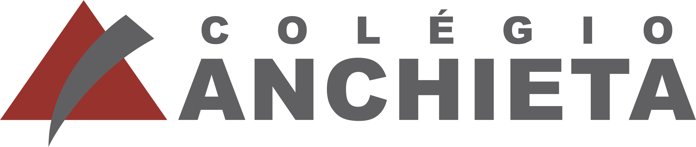
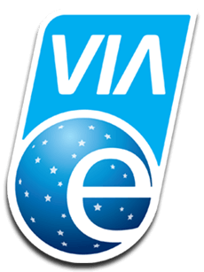
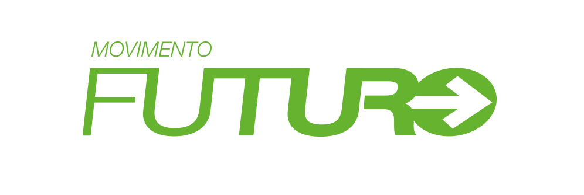

O “Caminho do Futuro” propõe um percurso pedagógico composto por seis passos. O primeiro passo (inter-agir) foca no autoconhecimento do estudante, de modo que perceba a sua singularidade. O segundo passo (com-fiar) proporciona uma articulação com toda a escola a fim dos estudantes identificarem os talentos que existem no seu território e incluírem todas as pessoas da instituição, independentemente da sua raça, etnia, deficiência, gênero, entre outros. O terceiro passo (sonhar) tem como princípio descobrir qual o sonho dos jovens para transformarem os seus espaços em conjunto com a comunidade, visando projetos sustentáveis, que estejam de acordo com os objetivos para 2030. O quarto passo (planejar) é a identificação de estratégias para tornar aquele sonho realidade, em interlocução constante entre o currículo escolar e o que se pratica. O quinto passo (realizar) é o momento “mão na massa” em que todos da comunidade escolar são convidados para trazerem os seus talentos e recursos para realizar o projeto. E, por fim, o sexto passo (contagiar) se destina a celebrar o que foi construído, divulgar o sonho materializado e sonhar com o próximo projeto.
PROJETO DE COMBATE AO RACISMO
  